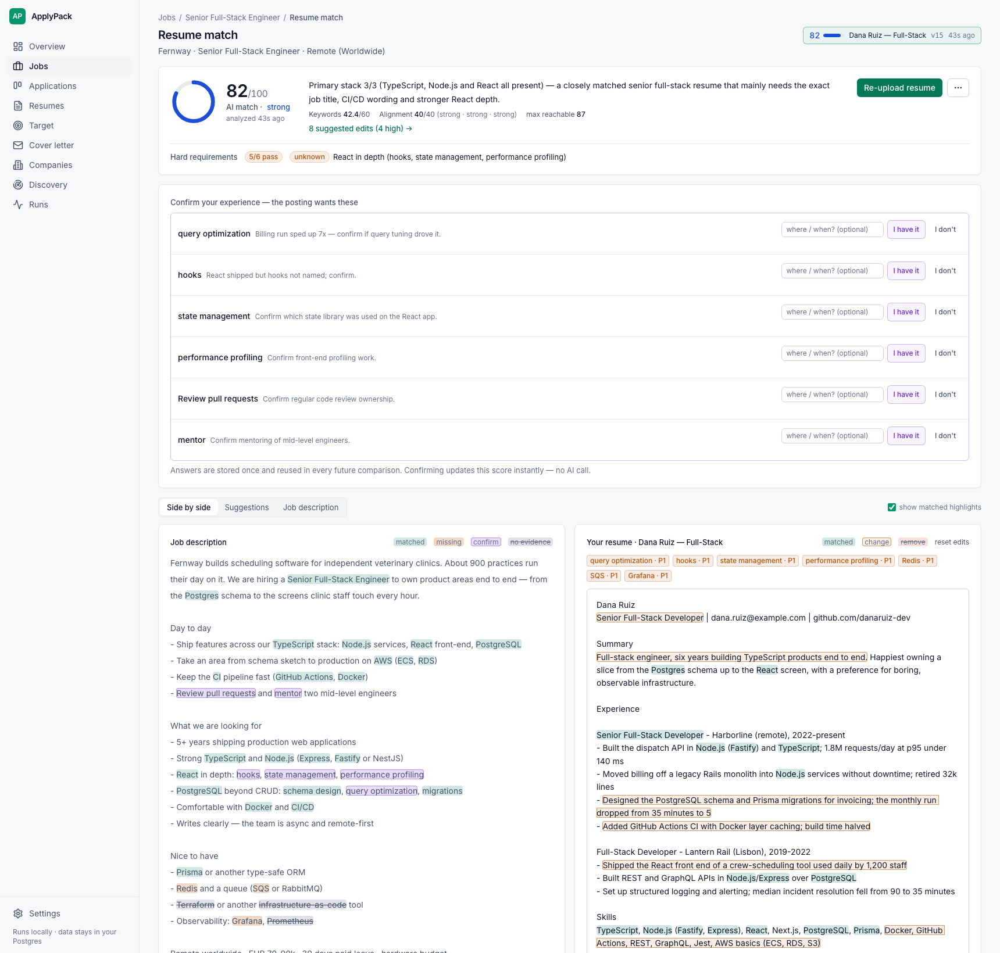
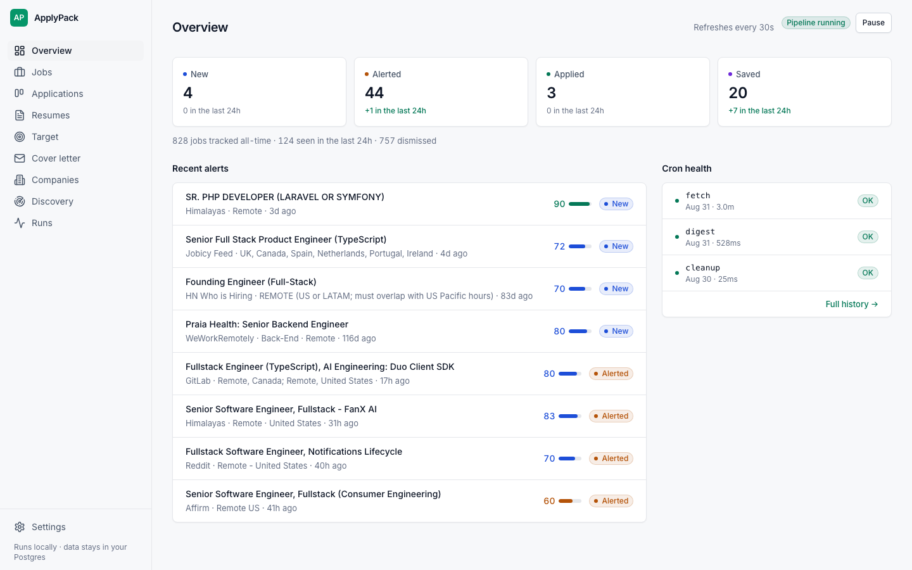

The whole job search,
self-hosted
ApplyPack reads the boards so you don't have to — then helps you apply well. It watches 22 job sources, scores each posting against your real profile, checks the job is real, tailors your resume and drafts the cover letter. Everything runs on your machine.

The targeted editor: an honest, deterministic resume-vs-posting score, one-click experience confirmations, live keyword highlights.
What you get
One pipeline from "a posting exists somewhere" to "application sent and tracked" — with an AI that is told exactly where it isn't allowed to flatter you.
22 sources, checked hourly
Ten ATS vendors — Greenhouse, Lever, Ashby, Workable, SmartRecruiters and five more — on the boards you pick, plus 11 aggregators and the monthly HN "Who is hiring" thread.
A classifier with strict rules
AI reads the full description against your stack, role types, seniority, regions and salary floor. "Full-stack" in a title is not a tech match, and "Remote · Germany" is not a US-remote job.
Telegram instead of tab-refreshing
Alerts above your fit threshold, a daily digest, and a nudge when an application goes quiet for two weeks.
Ghost-job verification
A live web-search checklist — careers page, company footprint, posting age, named humans — returns legit / suspicious / fake with evidence URLs.
Resume scores that can't flatter
The model marks facts, application code computes the score. A Laravel resume cannot sweet-talk its way to 85 against a Node.js posting.
Targeted resume editor
Posting and resume side by side, every keyword highlighted, coverage recomputed on each keystroke without spending a single AI call.
Cover letters that can't invent facts
Drafted from the posting, your resume and your own angle notes; every claim passes a fact gate against stored evidence. Exports to PDF / DOCX.
Application tracking
A small kanban from applied to offer, plus reminders for applications gone quiet.
Self-hosted and private
Official public APIs and RSS only, dashboard bound to localhost, no accounts, no telemetry. Your resume never leaves your Postgres.
How it works
Cheap deterministic filters drop the obvious misses first, so the AI only reads postings that might actually be for you.
Scores you can argue with
The model marks facts. Code computes the number.
Most AI resume tools average their way to a flattering score. ApplyPack splits the job: the model only marks what's present, missing or unverifiable — a unit-tested formula applies the caps.
- Primary-stack gate: no core-stack overlap caps the score at 30, no matter how good the rest looks.
- No sibling credit: Vue is not React, PHP is not Node.js.
- Unknowns stay unknown: the posting wants performance profiling and your resume doesn't say? You get a question, not a guess.
- Honest deltas: v2 of your resume is scored by the same deterministic path as v1, so "▲ +16" means something.

Quick start
Postgres, the worker and the dashboard — one compose file. A laptop or a $5 VPS is the whole deployment story.
git clone https://github.com/nazboyko/applypack.git cd applypack cp .env.example .env # add one AI engine key docker compose up -d # → http://localhost:4747
Fetchers, filters and the dashboard run without any AI key — you only need one for classification and resume work.